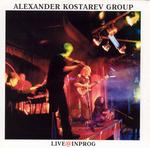

| Artist: | Alexander Kostarev Group |
| Title: | Live @ Inprog |
| Label: | Starless Records STR02 |
| Length(s): | 61 minutes |
| Year(s) of release: | 2003 |
| Month of review: | [10/2005] |
| 1) | Intro | 0.14 |
| 2) | Vegetarian | 7.38 |
| 3) | Hard Water | 7.09 |
| 4) | Purgatory | 9.47 |
| 5) | A-theist Hacker | 6.00 |
| 6) | Oasis | 6.33 |
Concerto grosso #1
| 7) | Allegro | 4.29 |
| 8) | Largo | 5.59 |
| 9) | Menouetto | 4.15 |
| 10) | Adagio | 3.48 |
| 11) | Presto. Finale | 4.55 |
The tracks sound like they might be improvised, although a Concerto Grosso in five parts suggests not. All material is instrumental and pretty energetic to the point of being freaky. Due to the fact that several instrumentalists take solos the album maintains at least something of a varied sound, steering away mostly (yes, mostly) from the sort of freaky self-adoration some jazz oriented ensembles might embellish. That doesn't necessarily mean, however, that the tracks are melodic most of the time.
Even though this set of personnel can't be expected to come up with music that sounds classical from a more traditional point of view, the concerto does manage to mingle the somewhat jazzy with rock sound the band normally exhibit with classical influences, resulting in the strongest section of this album, since the improvisational push abates just a tad.
The album was released on a label named Starless, being a rather suggestive title. And, yes, during A-theist Hacker we hear just the slightest hint of King Crimson influence. But this hint is just a tiny modest one, which can readily be ignored (or enjoyed, if so inclined).